CRM + operacjeFrankie CRM
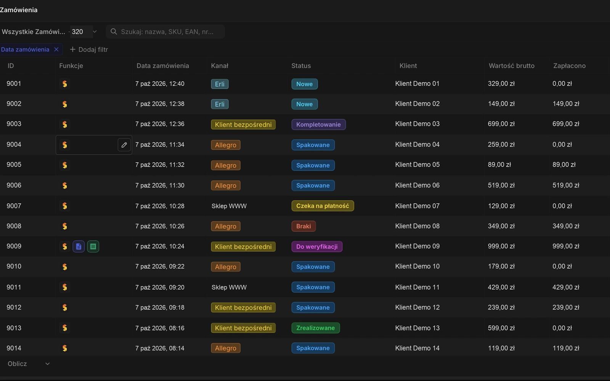
CRM i platforma operacyjnaKlienci, oferty, zamówienia, dokumenty, zadania, serwis i synchronizacje w jednym systemie.
Zobacz cały projekt
Zobacz cały projekt
Realizacje
Znajdziesz tu przykłady aplikacji, nad którymi pracowałem: CRM, konfigurator dachu, panel wypożyczalni, monitoring cen, narzędzia AI i grę. Opisy pokazują mój zakres prac i sposób działania. Dane na ekranach są demonstracyjne, a wizualizacje koncepcyjne oznaczam osobno.

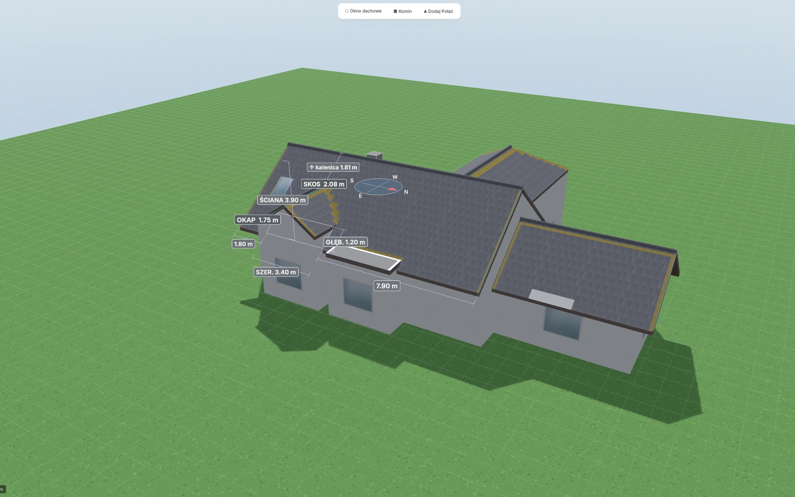
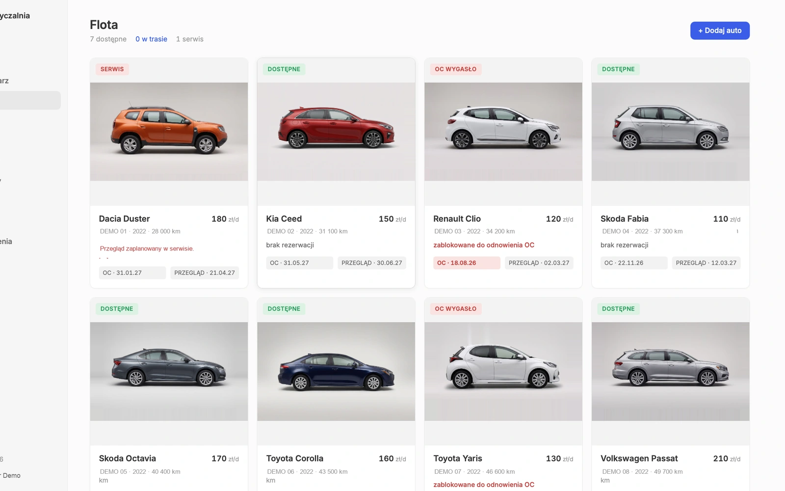
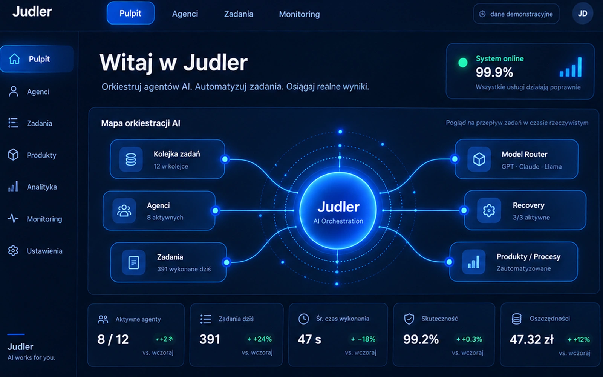
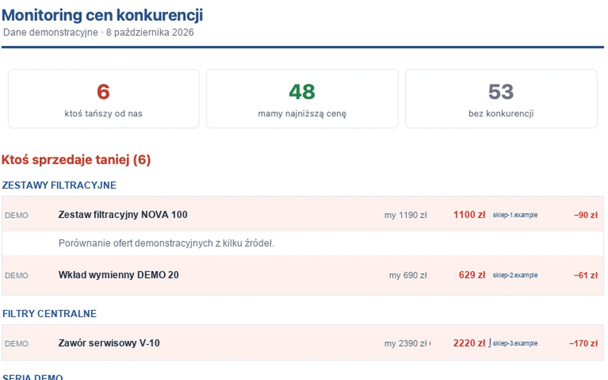
› analyze repository
tool: git_status ✓
› run tests
tool: terminal ✓ 128 passed
› /steer focus on migration_
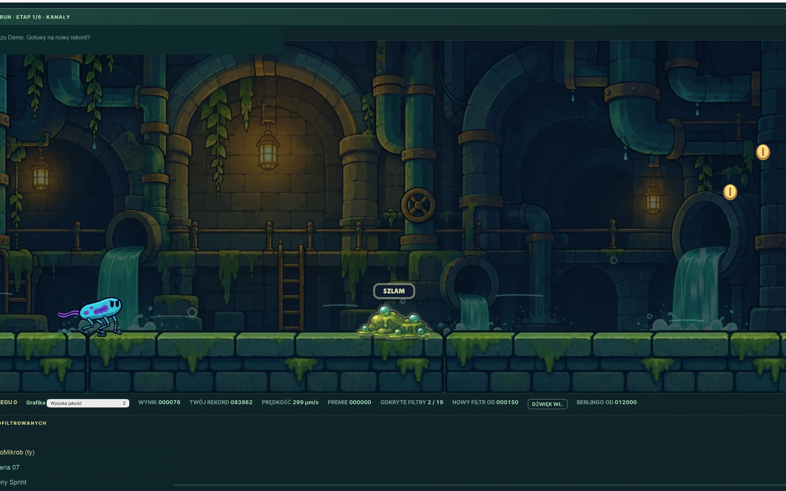
Każda realizacja poniżej ma osobny opis. Pokazuję ekran programu, jego najważniejsze moduły, sposób działania i to, co jest technicznie istotne.
Pełne realizacje
Wybierz projekt, aby przejść do jego opisu. Przy każdym wyjaśniam zastosowanie, funkcje i rozwiązania techniczne.
Co mogę zbudować podobnie
W jednej branży obiektem jest samochód, w innej zlecenie, klient, maszyna albo projekt. Technicznie wiele problemów wygląda podobnie: trzeba zebrać dane, przeprowadzić sprawę przez etapy, policzyć wynik, wygenerować dokument i przekazać dane dalej.
Dlatego podobne rozwiązanie może powstać jako CRM na zamówienie, system do obsługi zleceń, kalkulator dla klienta albo aplikacja zastępująca arkusz.
Studium przypadku
Dachówka fotowoltaiczna to produkt, którego nie da się wycenić z cennika. Cena zależy od kształtu dachu, kąta nachylenia, stron świata, zacienienia i tego, ile dachówek faktycznie wyprodukuje prąd, a ile jest tylko pokryciem.
Przygotowanie wyceny wymaga zebrania wymiarów, wyboru materiału i obliczeń. Konfigurator pozwala klientowi przygotować te informacje przed rozmową z handlowcem.
Aplikacja wykonuje obliczenia w przeglądarce. Użytkownik może pracować w kreatorze 3D lub skorzystać z mapy. Rozpoznawanie rzutu jest na pokazanym ekranie oznaczone jako funkcja planowana.

Tryb mapy służy do wskazania lokalizacji i obrysu dachu. Możliwość analizy zależy od dostępnych danych budynku. Gdy ich brakuje, użytkownik może wprowadzić parametry w kreatorze 3D.

Użytkownik wybiera typ dachu, np. dwuspadowy, kopertowy lub jednospadowy, a następnie podaje wymiary, nachylenie i orientację. Model aktualizuje geometrię oraz układ pokrycia po zmianie parametrów.
W modelu można uwzględnić okna dachowe, kominy i dodatkowe części budynku. Suwak pory dnia pomaga obejrzeć zmianę cienia na wizualizacji.
Wymiary i kąty są widoczne bezpośrednio na modelu. Ułatwia to sprawdzenie konfiguracji i rozmowę o parametrach; widok nie zastępuje projektu wykonawczego.


Podsumowanie zbiera parametry połaci, powierzchnię, szacowaną moc i ilość pokrycia. Projekt można zapisać i wykorzystać przy przygotowaniu oferty. Zakres wyniku zależy od wybranego trybu oraz dostępnych danych.

Klient może samodzielnie przygotować wariant dachu, a handlowiec otrzymuje parametry do weryfikacji i dalszej wyceny. Konfiguracja porządkuje informacje potrzebne do dalszej wyceny.
Jeżeli handlowiec za każdym razem zbiera te same parametry i ręcznie liczy wynik, zobacz kalkulatory i konfiguratory dla klientów albo opisz swoją logikę wyceny.
Nazwa, logotyp i zrzuty ekranu wykorzystane za zgodą właściciela. Dane widoczne na zrzutach są przykładowe.
Pokaz możliwości
To projekt pokazowy panelu dla wypożyczalni samochodów. Łączy zadania na dany dzień, dostępność floty, najmy i dokumenty. Pokazuje, jak można dopasować widoki do obowiązków osoby obsługującej wypożyczalnię.

W kalendarzu każdy wiersz odpowiada jednemu autu, a paski przedstawiają najmy i rezerwacje. Reguły dostępności uwzględniają nakładające się terminy oraz blokady związane z serwisem i OC.

Karta auta zawiera zdjęcie, stawkę, przebieg, terminy OC i przeglądu oraz historię najmu. Dane rozliczeniowe są powiązane ze zleceniem, a lista faktur pokazuje terminy płatności i statusy.


Panel jest przykładem wykonania, nie gotowym produktem w abonamencie. Podobny system mogę dopasować do Twojej floty, zasad rezerwacji i dokumentów. Zobacz opis programu dla wypożyczalni oraz zasady wyceny.
Zobacz program dla wypożyczalni i dedykowany system rezerwacji albo opisz swój obecny kalendarz i zasoby.
Projekt pokazowy. Nazwiska, dane kontaktowe, numery rejestracyjne i kwoty na zrzutach są demonstracyjne.
CRM i platforma operacyjna
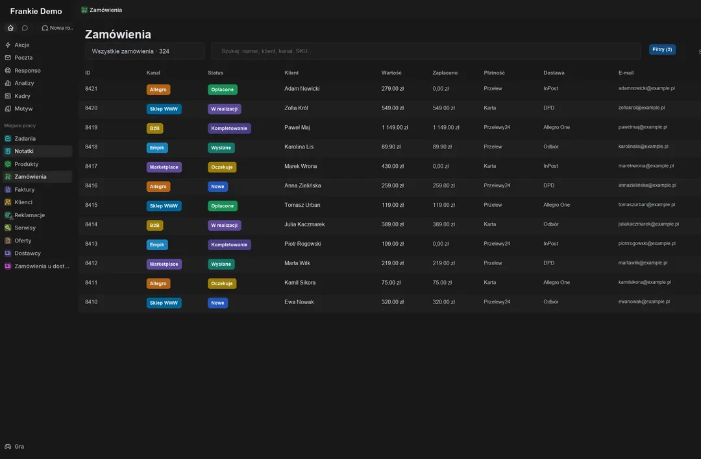
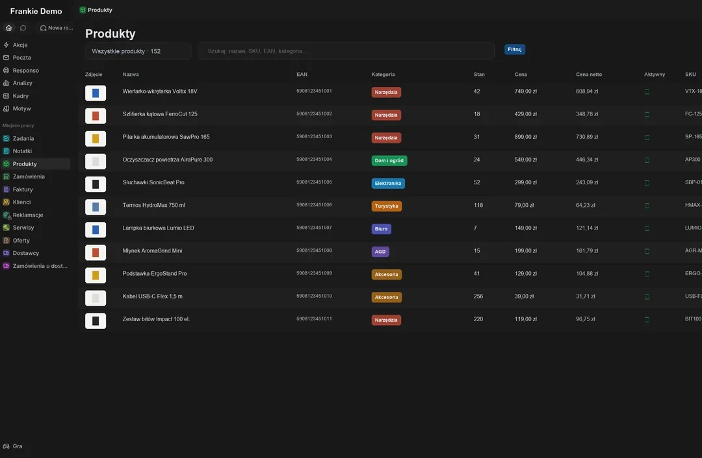
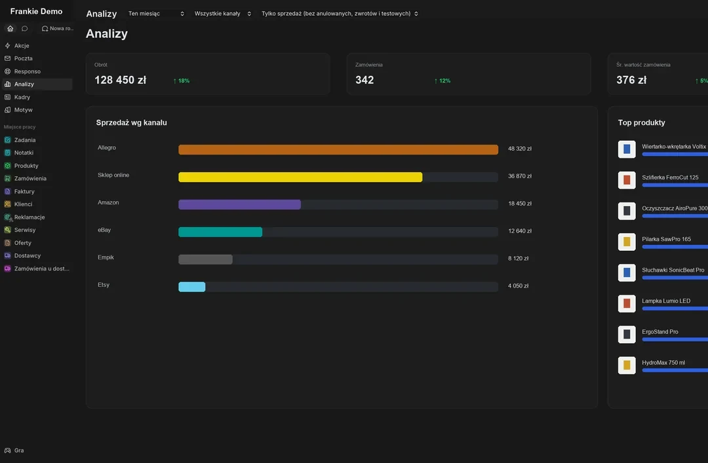
Frankie łączy katalog produktów, klientów, zamówienia, sprzedaż B2B, serwis i zadania. Pracowałem nad rozwojem aplikacji oraz integracjami e-commerce i księgowymi. Ekrany pokazują rzeczywisty interfejs z zastąpionymi danymi firm i klientów.
Katalog produktów obsługuje EAN-y, SKU, stany, ceny, warianty i synchronizacje. Zamówienia agregują różne kanały sprzedaży i pokazują płatność, dostawę oraz status realizacji. CRM porządkuje etapy sprzedaży, oferty i zadania związane z klientem. Do tego dochodzą serwis, dokumenty, zadania, historia zmian oraz monitoring procesów działających w tle.
Aplikacja korzysta z TypeScript, React i Node.js oraz działa w kontenerach. Przy integracjach istotna jest kontrola duplikatów i bezpieczne ponawianie operacji. Historia błędów pomaga sprawdzić, co wydarzyło się podczas synchronizacji.
Autonomiczny system agentowy na serwerze
Interaktywna wizualizacja panelu Judler. Statusy, wyniki i budżety są danymi demonstracyjnymi, nie bieżącym odczytem z serwera.
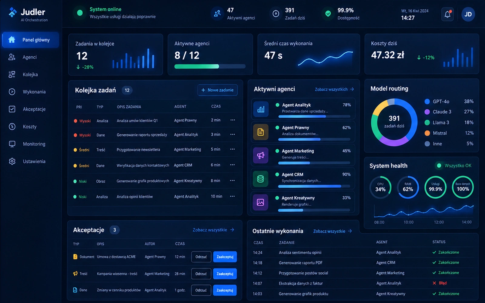
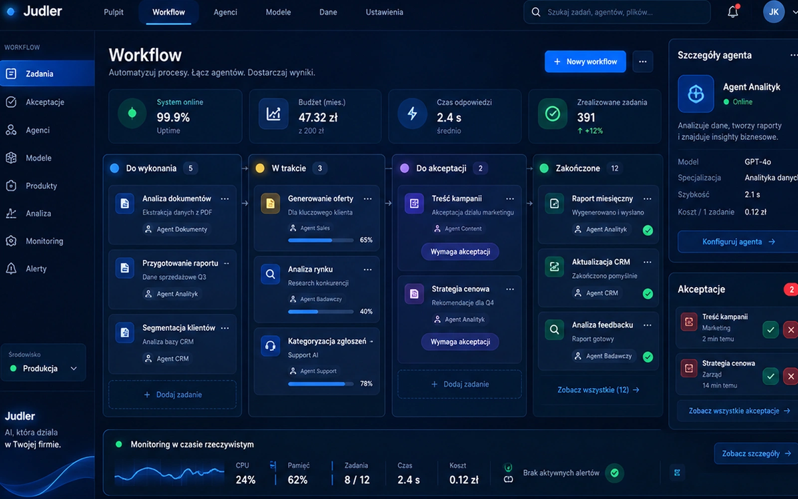
Judler służy do zlecania i nadzorowania zadań agentów AI na serwerze. System przechowuje stan pracy, dobiera modele i kontroluje budżet. Prezentowany panel jest wizualizacją koncepcji interfejsu, a nie odczytem bieżącego działania.
Zadanie trafia do kolejki, a system dobiera model i agenta odpowiedniego do pracy. Operator sprawdza postęp, błędy i zadania wymagające akceptacji. Ważne decyzje mogą wymagać zatwierdzenia przez człowieka.
Dłuższe zadania zapisują stan w punktach kontrolnych. Po przerwaniu pracy można sprawdzić ostatni zapis i wznowić obsługiwany etap. Monitoring usług oraz limity kosztów pomagają wykrywać problemy podczas wykonania.
Monitoring i watchdog
narzedzia24.pl699 złpotwierdzona
toolmarket.pl729 złpotwierdzona
marketplace715 złodrzucona: inny wariant
System przechowuje katalog produktów i rodzin, ceny własne, znalezione oferty, źródła, wynik bezpośredniej weryfikacji oraz historię zmian. Raport pokazuje od razu, gdzie ktoś sprzedaje taniej, gdzie własna cena jest najlepsza i przy których produktach nie ma wiarygodnej konkurencji.
Pierwszy etap wyszukuje potencjalne oferty, drugi wchodzi bezpośrednio na stronę sprzedawcy i sprawdza wariant oraz aktualną cenę. Dopiero potwierdzony wynik zapisuje się do historii i może uruchomić alert. W osobnej kolejce zostają przypadki, których automat nie potrafił zweryfikować pewnie.
Program kontroluje także sam siebie: zapisuje czas ostatniego pełnego przebiegu i zgłasza, gdy monitoring nie wykonał się prawidłowo. Dzięki temu brak alertu nie jest mylony z brakiem zmian na rynku.
Narzędzie programistyczne
› analyze repository and plan migration
tool: git_status ✓
› run tests
tool: terminal ✓ 128 passed
› /steer focus on backward compatibility
› _
Agent działa w terminalu VS Code i korzysta z bieżącego katalogu projektu. Może wykonywać polecenia i używać udostępnionych narzędzi MCP. Dostęp ogranicza się do przyznanych mu uprawnień.
Podczas pracy można dopisać polecenie do kolejki, skorygować kierunek komendą /steer, zatrzymać zadanie i sprawdzić status. Zapisy stanu pomagają zachować historię rozmowy oraz wykonanych operacji.
Gra i gamifikacja
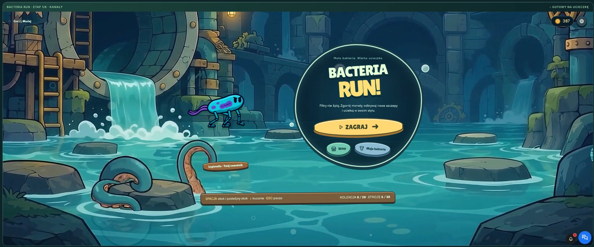
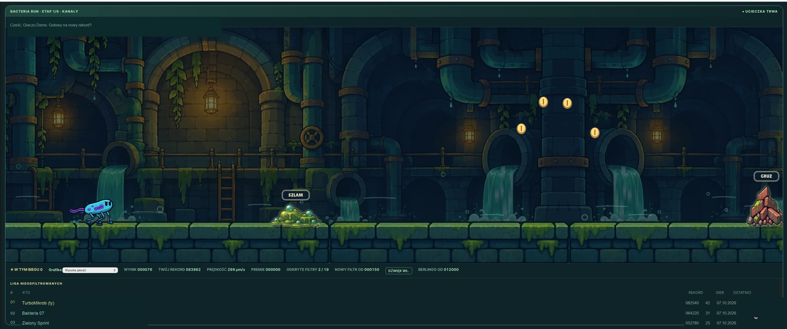
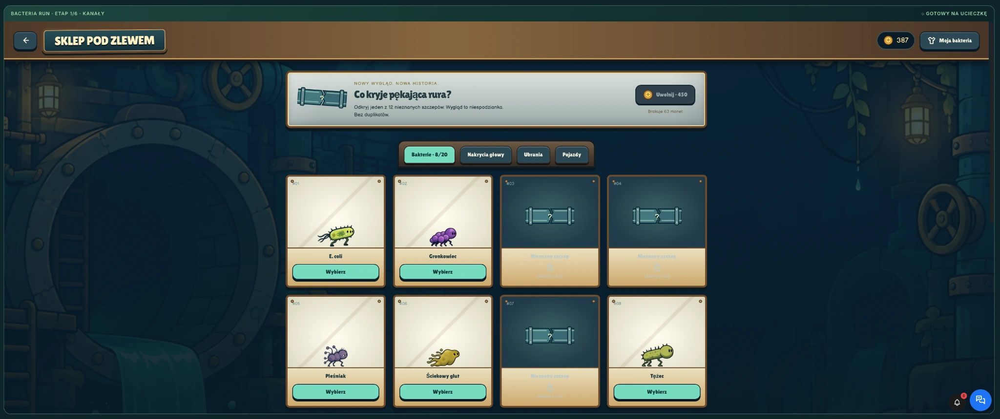
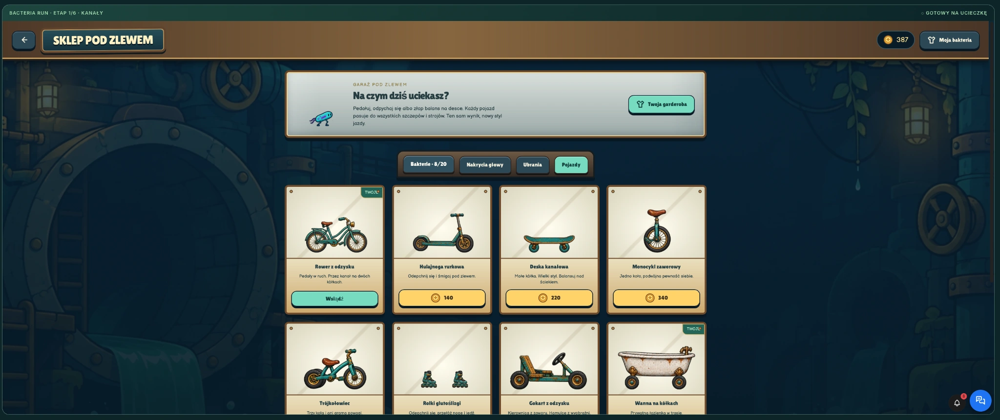
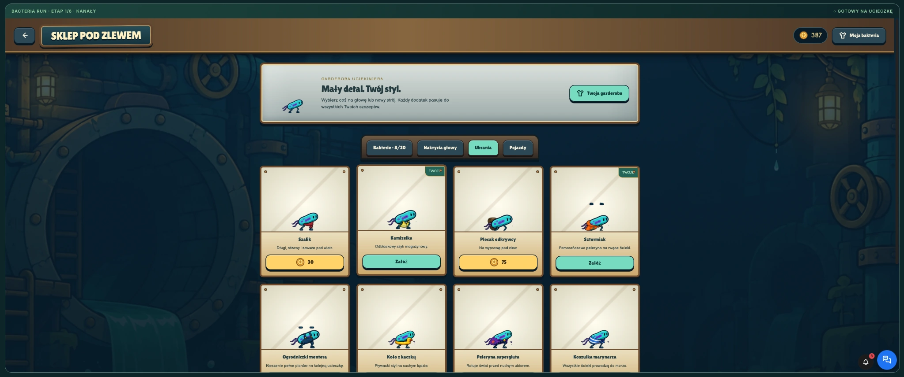
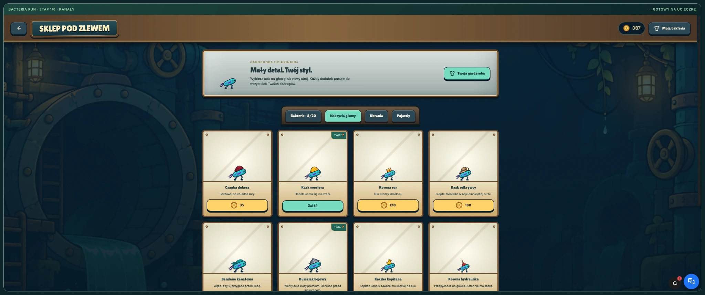
Bacteria Run to gra przeglądarkowa, w której gracz omija przeszkody i zbiera monety. Ma menu, sklep, ranking oraz kolekcję postaci i dodatków. Ekrany pochodzą z gry; nazwy użytkowników zastąpiłem danymi demonstracyjnymi.
Gra ma własną pętlę renderowania na Canvasie, logikę ruchu i kolizji, skok i kucanie, zmienną prędkość, przeszkody oraz kolejne etapy z różnymi środowiskami. Ruch i fizyka są testowane automatycznie, żeby zmiana jednej mechaniki nie psuła innych poziomów.
Wygląd postaci składa się z osobnych elementów: rodzaju bakterii, nakrycia głowy, ubrania, pozy i pojazdu. Pozwala to łączyć dodatki bez przygotowywania osobnej grafiki dla każdej kombinacji.
Osobny moduł sklepu obsługuje monety, blokady, odblokowania i aktualnie używane elementy. Menu i garaż pokazują zawartość kolekcji, a stan gracza jest oddzielony od samego silnika gry, dzięki czemu można go synchronizować z zewnętrznym systemem.
Przetwarzanie danych i raporty
nazwy parametrów · jednostki · daty · lokalizacje
✓ walidacja schematuProgram zbiera raporty w różnych formatach i porządkuje je we wspólnym układzie. Dla każdego źródła odczytuje punkt poboru, datę, parametr, jednostkę i wynik, a następnie przygotowuje plik do dalszej analizy.
Najwięcej uwagi wymaga ujednolicenie nazw, jednostek, dat i układu kolumn. Program rozpoznaje obsługiwane warianty i oznacza rekordy, które wymagają ręcznego sprawdzenia.
Zamiast ręcznie przepisywać kilkanaście raportów do jednego arkusza, użytkownik dostaje gotowy plik z identycznym układem kolumn, możliwy do filtrowania, porównywania i dalszej analizy.
Audyt sklepu / FastAPI
✓SSL i przekierowania HTTPSOK
✓Sitemap i indeksowalne adresyOK
!EAN / GTIN na kartach produktu17 braków
!Dane producenta / GPSR9 braków
✓Omnibus / historia cenyOK
Użytkownik podaje publiczny adres sklepu. Aplikacja pobiera sitemapę i próbkę kart produktów, analizuje HTML oraz dane strukturalne i tworzy raport bez logowania do panelu sklepu. Dzięki temu to, co widzi narzędzie, jest zbliżone do tego, co może odczytać wyszukiwarka lub klient.
Narzędzie sprawdza m.in. HTTPS, odpowiedzi serwera, mapę strony, dane produktów, EAN/GTIN i wybrane informacje związane z GPSR oraz obniżkami cen. Wykryte sygnały wymagają oceny w kontekście danego produktu; wynik nie jest potwierdzeniem zgodności prawnej.
FastAPI odpowiada za API i kolejkę audytu, httpx za pobieranie stron, lxml za parsowanie dokumentów, a SQLite przechowuje wyniki i historię. Zestaw testów obejmuje parsery oraz reguły, żeby zmiana jednego audytu nie psuła pozostałych.
Tworzenie strony i testy
✓ Strony HTML: poprawne adresy i metadane
✓ CSP i nagłówki bezpieczeństwa: OK
✓ Niedziałające linki: 0
✓ Błędy JavaScript w Chrome: 0
✓ Test przed publikacją: zakończony
Generator składa stronę z plików źródłowych i wspólnych elementów. Aktualizuje metadane, wersje zasobów, mapę strony i kanał poradników. Pozwala odtworzyć tę samą wersję przed publikacją.
Po wygenerowaniu strony uruchamiam testy linków, metadanych, zabezpieczeń i działania JavaScriptu. Osobno sprawdzam wybrane zachowania w przeglądarce, dostępność i wydajność. Testy automatyczne uzupełniają kontrolę wyglądu.
Publikuję wersję po wykonaniu testów przewidzianych dla danego zakresu. Po wdrożeniu sprawdzam stronę na domenie. Błędy wykryte przed publikacją poprawiam w wersji roboczej.
Opisz, jak dziś wygląda ta praca. Podaj używane programy, opisz problem i oczekiwany efekt. Na tej podstawie zaproponuję rozwiązanie.
Zobacz realizacje i sprawdź przykłady aplikacji. Przejrzyj poradniki, aby porównać rozwiązania. Prowadzisz sklep internetowy? Zobacz osobny serwis poświęcony automatyzacjom e-commerce.
Zadzwoń: 570 427 127, jeśli wolisz rozmawiać. Rozmawiasz bezpośrednio ze mną.